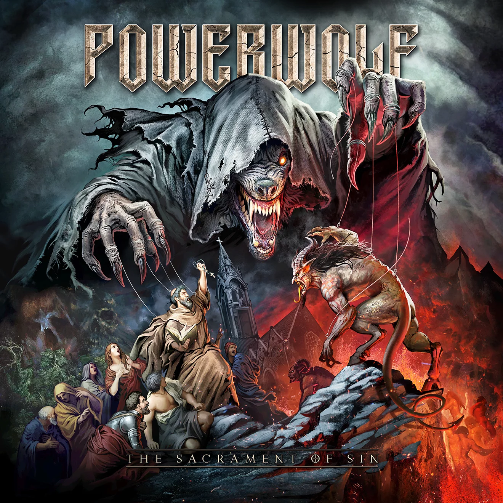

CALL OF THE WILD
Call of the Wild é o oitavo álbum de estúdio da banda alemã de power metal Powerwolf.
Lançado em 16 de julho de 2021, o trabalho foi publicado pela Napalm Records.
TRACKLIST
- Faster than the Flame
- Beast of Gévaudan
- Dancing with the Dead
- Varcolac
- Alive or Undead
- Blood for Blood (Faoladh)
- Glaubenskraft
- Call of the Wild
- Sermon of Swords
- Undress to Confess
- Reverent of Rats
THE SACRAMENT OF SIN
The Sacrament of Sin é o sétimo álbum de estúdio da banda alemã de power metal Powerwolf,
lançado em 20 de julho de 2018 pela Napalm Records.

TRACKLIST
- Fire & Forgive
- Demons are a Girl's best Friend
- Killers with the Cross
- Incense & Iron
- Where the Wild Wolves Have Gone
- Stossgebet
- Nightside of Siberia
- The Sacrament of Sin
- Venom of Venus
- Nighttime Rebel
- Fist by Fist (Sacralize or Strike)
BLESSED & POSSESSED
Blessed & Possessed é o sexto álbum de estúdio da banda alemã de power metal Powerwolf,
lançado em 17 de julho de 2015 pela Napalm Records.
TRACKLIST
- Blessed & Possessed
- Dead Until Dark
- Army of the Night
- Armata Strigoi
- We Are the Wild
- Higher Than Heaven
- Christ & Combat
- Sanctus Dominus
- Sacramental Sister
- All You Can Bleed
- Let There Be Night
PREACHERS OF THE NIGHT
Preachers of the Night é o quinto álbum de estúdio da banda alemã power metal Powerwolf. Foi lançado em 19 de julho de 2013
pela Napalm Records.
TRACKLIST
- Amen & Attack
- Secrets of the Sacristy
- Coleus Sanctus
- Sacred & Wild
- Kreuzfeuer
- Cardinal Sin
- In the Name of God (Deus Vult)
- Nochnoi Dozor
- Lust for Blood
- Extatum et Oratum
- Last of the Living Dead
BLOOD OF THE SAINTS
Call of the Wild é o oitavo álbum de estúdio da banda alemã de power metal Powerwolf.
Lançado em 16 de julho de 2021, o trabalho foi publicado pela Napalm Records.

TRACKLIST
- Sanctified with Dynamite
- We Drink Your Blood
- Murder at Midnight
- All We Need Is Blood
- Dead Boys Don't Cry
- Son of a Wolf
- Night of the Werewolves
- Phantom of the Funeral
- Die, Die, Crucified
BIBLE OF THE BEAST
Bible of the Beast é o terceiro álbum de estúdio da banda alemã power metal Powerwolf.
O álbum foi lançado em 24 de abril de 2009.

TRACKLIST
- Raise Your Fist, Evangelist
- Moscow After Dark
- Panic in the Pentagram
- Catholic in the Morning... Satanist at Night
- Seven Deadly Saints
- Werewolves of Armenia
- We Take the Church by Storm
- Resurrection by Erection
- Midnight Messiah
- St. Satan's Day
- Wolves Against the World